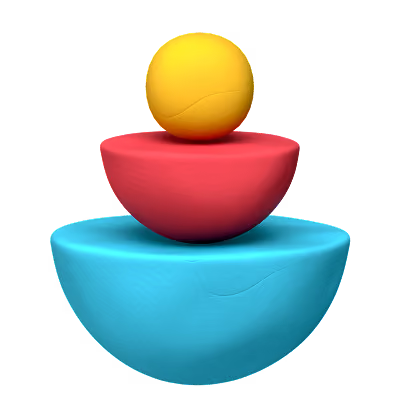
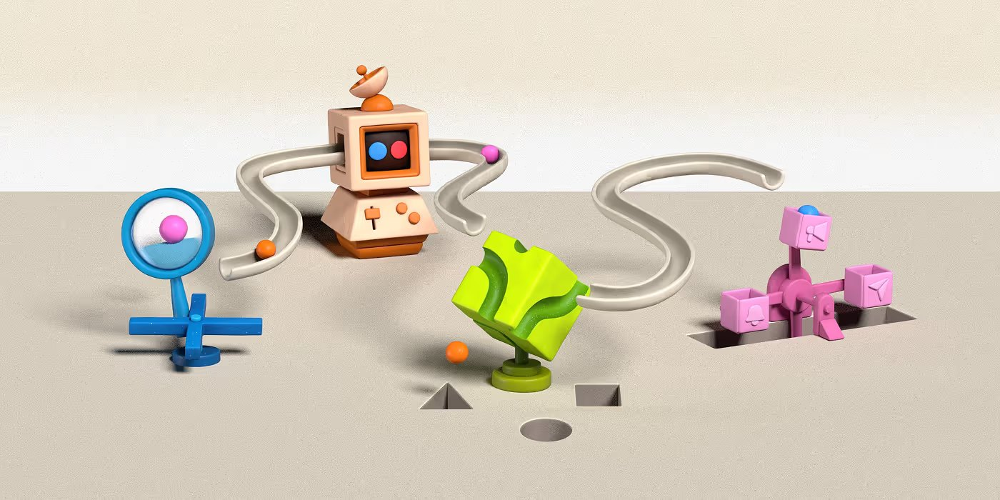

This issue · Clay
Software for sales and marketing teams. Give it a list of companies and it searches 200+ data vendors and the web for the right people, their contact details and buying signals, then writes the results back to your CRM.
Research to Oct 16, 2026 · spot-checked Nov 10, 2026 · every figure carries its dateClay sells to the teams that sell to other businesses. It does not own a contact database. It rents from everyone else’s.
Imagine you sell software to other companies. You have a list of companies that might buy. A name is not enough. Before anyone can pick up the phone, you still need three things:
For two decades, sales teams bought these answers from large data companies. The biggest, ZoomInfo, keeps an enormous database of business contacts and sells it on annual contracts priced per seat:1 every salesperson who logs in costs another licence.
Owning the database has two built-in problems. First, it goes stale: people change jobs, get promoted and leave. Second, no single vendor covers everyone, because each is strong in some countries, industries or company sizes and weak in others.
Clay’s answer is to own none of it. It plugs into the vendors, asks them in turn, and charges for what it finds. The next two pages show how.
How fast business contact data decays each month, by co-founder Varun Anand’s estimate: “data decays, I think it’s like two to 4% a month.”2
1Seat: one paid user licence. ZoomInfo’s seat-based model as described in the research notes (Oct 2026). 2Summation podcast, Oct 14, 2025, 20:07. A founder’s estimate, not a measured figure. S1, S13.
Rows are companies or people. Each column sends a vendor, a website or an AI model to fill in one blank, then passes the answer along.
The vendors answer questions a database can hold. Claygent, Clay’s AI research agent, answers the ones it can’t: does this company sell to hospitals? Is it hiring sales reps right now? Finished rows go back into the CRM, or into an email sequence or an ad audience.
The product has kept growing past the table. In 2026 Clay shipped Workflows, Audiences and a Sequencer, and in April it released Clay MCP, which lets AI assistants and coding agents call Clay directly.1 The user it is built for has not changed: the operator who builds the sales team’s machinery, not the rep who works the phone.
Workflow runs Clay was on track for in 2025, by CEO Kareem Amin’s count in October 2025.2
We explicitly are not building for salespeople, actually.
Varun Anand, co-founder · Summation, Oct 14, 2025, 15:101Clay product announcements, Apr–Sep 2026, as logged in the research notes; Clay MCP became available in OpenAI’s Codex in June 2026. 2LangChain podcast, Oct 8, 2025, 21:59 Reported. S1, S11, S13.
Clay’s best-known feature turns many patchy databases into one fuller one, and the customer pays only when something is found.
The customer never signs a hundred separate vendor contracts. The skill lies in the order: which vendor to ask first, for which country and which kind of job title, at what price.
That routing knowledge is the real asset. Clay sends so much volume that some small vendors depend on it, and it invites any vendor that thinks it has better data to prove it inside the waterfall: “we’re the distribution partner for all these data providers,” Anand said in October 2025.1 Clay is less a data company than a buyer and router of data.
OpenAI’s enrichment coverage in Clay’s own case study: from the low-40% range with its previous setup to the high-80% range with a multi-vendor waterfall.2
We have integrations with 150 data providers … because of our scale, we can send them a lot more usage. So there’s a lot of smaller companies that rely actually on our usage.
Kareem Amin, CEO · LangChain, Oct 8, 2025, 34:141Summation, Oct 14, 2025, 19:15. 2Company case study Reported; not independently tested. Vendor count: 150 (Oct 2025) and “150+” in Clay’s March 2026 pricing memo; Clay’s 2026 product pages cite 200+ providers. S3, S11, S13.
From one-person agencies to the AI labs, and each pays more on average.
Clay says 80% of the Forbes AI 50 use it, including Anthropic, OpenAI and Stripe.1 Three groups drive the business:
1Series D post, Sep 9, 2026. 2Zona Zhang, who runs pricing at Clay, Vibe Pricing, Dec 11, 2025, 24:47. 3Same episode, 14:04. Enterprise retention: Clay blog, Dec 2025–Jan 2026, enterprise accounts only. Ramp’s sample skews to startups and mid-market. Revenue per customer = run-rate ÷ customers, author’s calculation. S2, S4, S8, S16.
The sales-data budget itself is barely growing. The largest incumbent is now shrinking, while Clay’s revenue roughly doubled in nine months.
| Clay | Apollo | ZoomInfo | |
|---|---|---|---|
| Revenue | ~$200M run-rateQ3 2026, CEO, unaudited | ~$150M ARR1May 2025, Sacra est. | $1.25BFY2025; 2026 guided ~$1.22B |
| Growth | $1M → $100M ARRearly 2023 → Dec 2025 | +34% YoY1May 2025, Sacra est. | −3% YoYQ3 2026 |
| Customers | 17,000+Sep 2026 | ~40,000 payingApr 2026, secondary | 1,851 at $100K+ ACVQ3 2026, −2% YoY |
| Net retention | >200%enterprise only, company | not disclosed | 88%Q3 2026 |
| Pricing | usage meters, unlimited seats | per seat, from $49a month, 2026 pricing roundup | annual contracts, per seat |
| Ramp adoption2 | 24% | 39% | 17% |
ZoomInfo’s problem is the seat. When customers shrink their sales teams, its revenue shrinks with them. In the second quarter of 2026 its downmarket contract value fell 12% year on year, and in May it cut about 600 jobs, roughly a fifth of staff. Its third-quarter results on November 4 showed revenue down 3% and net retention at 88%.3 Clay charges for usage, so its revenue does not depend on how many salespeople a customer employs.
Apollo is the closer threat. It is cheaper, simpler and owns its data, and more Ramp companies use it than use Clay. Against Apollo, Clay has no established moat (page 9).
1Apollo is private; figures are Sacra estimates and are now 18 months old. 2Share of Ramp companies buying sales data that use each vendor (Oct 2026); LinkedIn Sales Navigator leads at 48%. 3ZoomInfo Q2 and Q3 2026 results (Aug 5 and Nov 4, 2026); layoffs per Briefing.com, May 2026. Clay’s ~$100M (Dec 2025) → ~$200M (Q3 2026) is company and CEO statements. S4–S8.
Clay began as a no-code data tool in search of a buyer. A third co-founder found one in cold-email agencies.
People Anand hand-picked from years of a sales forum’s archives. “The only ones who kind of really understood this were these agency owners, these like cold email agency owners.”1
His “reverse demos” let prospects drive the product. Closing a $200–300-a-month customer once took about seven demos; by early 2023 it took “one call or even none”.2
You couldn’t pay for [Clay] the product until past a million in ARR. Until a million in ARR, I was just sending Stripe invoices to people.
Varun Anand · In Depth (First Round), Jan 23, 2025, 15:571In Depth, Jan 23, 2025, 05:41; the forum was Modern Sales Pros. 2Same episode, 08:46. Founding and Rusan: Sequoia (Jun 27, 2024), company bios. “$1M → $100M in two years” is Clay’s own shorthand; the dated milestones span about 35 months. ARR = annual recurring revenue. S4, S9, S12, S14.
The “GTM engineer” builds sales machinery the way a software engineer builds software. Clay says it invented the title in 2023.
Ideal customer: size, industry, tech stack
Companies and people from search or the CRM
Emails, phones and signals via waterfalls
AI reads websites; formulas rank fit
Personalised email, ads or a rep alert
Edit one step and ship it again, like code
Clay describes its own sales GTM engineers as collapsing the work of three roles into one: the SDR who finds and contacts prospects, the account executive who closes, and the sales engineer who handles the technical questions.1 A Jan 2026 analysis of ~1,000 postings found GTM-engineer jobs up ~205% a year; about two-thirds named Clay.2
The job and the price list fit together. Amin says Clay chose usage pricing “because we’re trying to get more productivity”. If one GTM engineer replaces three seats, a seat vendor loses two licences; Clay sells more usage.
One caution: Kyle Poyar’s data (via a secondary summary) puts 45% of GTM-engineer roles at agencies or consultancies. Outside Clay’s ecosystem, the job is thinner than its marketing suggests. Judgment
So if you have fewer people, we didn’t want that to be something that is an anti-incentive for us.
Kareem Amin · Invest Like the Best, Jun 16, 2026, 09:131Clay blog, “Sales GTM Engineering” (2026); title claim per Clay blog, Nov 10, 2026. 2Bloomberry, Jan 2026, re-reported by vendor blogs; treat as directional Reported. Six-step loop simplified from Clay templates. ILTB timestamp from the audio feed. S15, S21–S23.
Against ZoomInfo, Clay has one real moat. Against the cheaper, simpler Apollo, it has none.
The one that holds is counter-positioning. ZoomInfo sells its own database and charges per seat; Clay charges for usage and resells every rival’s data. To copy Clay, ZoomInfo would first have to cut its own revenue. Its revenue fell 3% year on year in the third quarter of 2026, while the share of enterprise companies on Ramp using Clay rose from 7% to 20% in the two years to September 2026.1
Against Apollo, Clay has no edge. Apollo is cheaper and simpler, with paid seats from $49 a month,2 and in 2026 both big CRMs built it into their AI agents: Salesforce and HubSpot each picked Apollo as one of three data partners for their prospecting agents.3
The weak spot is the meter itself. With usage pricing, a mistake costs real money: one user accidentally re-ran a table, burned $1,000 of credits and cancelled.4
Weakness1ZoomInfo Q3 2026 results, Nov 4, 2026; Ramp vendor data, Oct 2024–Sep 2026. 2Entry plan per user on annual billing, from a 2026 pricing roundup cited in the research; Apollo’s own pricing page showed no prices when checked on Nov 10, 2026. 3Salesforce Hunter partners announced Sep–Oct 2026 (launch not confirmed as of Nov 10); HubSpot’s Prospecting Agent, in public beta since Apr 14, 2026. 4A G2 review, Sep 2026: one user’s account, not a churn measure. S7, S8, S18, S20, S25.
Clay is valued at about 35 times its revenue run-rate. The incumbent that owns its data trades at about one times.
Until March 2026, Clay was priced like what it said it wasn’t. Its own pricing memo admitted: “we still charge primarily per data point.” It also conceded that its Pro customers had been sold credits “at or below breakeven levels”.1 The new model splits the bill in two:
Contact and company data from 150+ vendors. Prices cut 50–90%, to roughly what buyers would pay vendors directly.
Enrichments, AI tasks, API calls and pushes to other tools. A new meter for the orchestration Clay actually adds.
Clay called the change “intentionally revenue- and profit-negative in the near term”. It can afford that: it has raised about $317M, and says it was cash-flow positive for parts of 2025 and “earned more in interest than it burned”.2 Gross margin has never been disclosed. Because every credit carries a vendor bill, we estimate 55–70%, below the 80–90% typical of software. Estimate
There is a meaningful variable cost for every credit that we sell. So we just have a lower margin of error to play with.
Zona Zhang, pricing · Vibe Pricing, Dec 11, 2025, 28:041Clay pricing memo, Mar 11, 2026. New plans: Launch $185, Growth $495 a month (at launch). 2Tender-offer post, Jan 28, 2026. Valuations: $500M (Jun 2024), $1.25B (Jan 2025), $3.1B (Aug 2025), $5B tender (Jan 2026), $7.1B (Sep 2026). ZoomInfo ≈ $0.9B market value (Q3 average buyback price × shares) ÷ ~$1.22B 2026 revenue. S2–S7, S10, S16.
Clay is not going to run out of money. The danger is that buyers stop needing a router between them and the data.
Clay’s response is to go where the agents are. Clay MCP shipped in April 2026, Clay arrived in OpenAI’s Codex in June, and a CLI and a Claude Code plugin followed. Each move assumes the table is becoming optional. ZoomInfo is making the same bet, pitching its data as a “headless context layer” for AI agents.3
For individual specialists, small teams, and agencies, Claude Code simply wins.
Quinten Kamphuis, who cancelled a $500-a-month plan · YouTube, May 16, 2026, 11:211Apollo newsroom (Sep 2026); ZoomInfo and Demandbase releases, Oct 15, 2026; destinationCRM, Oct 16, 2026. 2Becca Lindquist, 20VC, May 2, 2026, 23:25. 3ZoomInfo Q3 2026 release, Nov 4, 2026. Proxycurl: Social Media Today; ProAPIs: The Record. Kamphuis quote as transcribed in the research notes; the clip was not re-listened for this issue. S7, S17–S19, S24.
Clay won its first round by owning nothing. The second round is about whether AI agents still need a router.
The default checkout for GTM data: 17,000+ customers, enterprise retention above 200%, run-rate adding $11–12M a month through a repricing. Near breakeven; no need to raise.
No owned data, no disclosed margin, two meters users find hard to predict. The long tail is leaving for coding agents. Salesforce chose three other data partners. At 35×, little room for error.
Our reading: Clay’s first bet, never to be a data company, has held up better than expected. The risk is not failure. It is being bypassed: CRM agents bundle data from above and coding agents do the stitching from below, leaving Clay a profitable niche tool. The company would survive that. The $7.1B price would not. We put the odds of that outcome at roughly one in three over three years. Judgment
We’re not building a microwave … But we’re building a guitar.
Kareem Amin · Invest Like the Best, Jun 16, 2026, 40:13A high-skill instrument is valuable while the skill is scarce. The question for 2027 is what happens when an agent can play it. Judgment
Odds and readings are the author’s judgment as of Oct 16, 2026; the Hunter partner list was updated on Nov 10, 2026. Monthly run-rate gain derived from $100M (Dec 2025) to ~$200M (Q3 2026). S1, S5, S15.
Method. Research ran to Oct 16, 2026. On Nov 10, 2026 we updated ZoomInfo to its Q3 2026 results and Hunter’s data partners; no other figure was updated. Filing marks public filings, Reported company statements and press, Estimate the author’s calculations and Judgment the author’s opinion. Clay’s 2026 revenue figures are spoken run-rates, not audited or contracted ARR. Quotes come from transcripts, some machine-made; cuts are marked “…”, timestamps are approximate.
Gaps. Gross margin. Revenue from Actions. Which vendors carry Clay’s volume. Self-serve churn. Current Apollo figures. Hunter’s launch status. How much of Clay’s usage now starts in AI agents.
Glossary. CRM: customer database such as Salesforce. Enrichment: filling in missing fields. SDR: junior rep who books meetings. ACV: annual contract value. Net retention: this year’s revenue from last year’s customers. MCP: standard for AI agents to call tools.
ZoomInfo’s figures now reflect its Q3 2026 results (Nov 4, 2026), replacing earlier-quarter figures in the research. Hunter’s partners are Apollo, ZoomInfo and Demandbase; the research had listed Apollo only. A remark that many data providers are “built on LinkedIn”, credited to Varun Anand in the research notes, was spoken by the podcast host, so it is not quoted here.